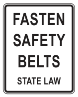

Defensive Driving
To avoid crashes, the defensive driver should:
- Stay alert and keep eyes moving to keep track of what is happening at all times
- Look for trouble spots developing all around
- Have a plan of action
- Know that the law requires drivers to protect each other from their own mistakes
Safety Belts
The driver and all passengers, regardless of age, in a passenger vehicle are required to use safety belts if occupying a seat in a vehicle equipped with a safety belt. Any child under 8 years old must be secured in a federally approved child car seat if occupying a seat in a vehicle equipped with a safety belt, unless the child is more than 4’9” tall.
Safety belt requirements include pickups, SUVs, and trucks. Safety belts help keep you:

FASTEN · SAFETY · BELTS · STATE LAW
- From being thrown from your car. Your chances of being killed are five times greater if you are thrown from your car
- From hitting the dashboard too hard
- In better control of your car
Whatever your reason for not wearing safety belts, it is dangerous and violates state law.
Penalties for Driving Without a Safety Belt
A driver can receive a citation for not wearing his/her safety belt and for not having each child under the age of 17 in a safety seat or safety belt. Anyone who is at least 15 years of age can receive a citation for not wearing a safety belt. There are no exemptions to the safety belt laws. However, there are some defenses to prosecution for postal workers, individuals who deliver the newspaper, utility workers, solid waste truck workers, certain commercial farm vehicle operators, or medical reasons with a physician’s note.
| Conviction | Penalty* |
|---|---|
| Driving a vehicle without a safety belt | A fine of $25 to $50 |
| Passengers under 8 years old and less than 4’9” tall riding while not properly secured in a child passenger safety seat system | A fine of $25 to $250 |
| Passengers at least 15 years old riding without a safety belt | A fine of $25 to $50 |
| Passengers under 17 years old riding without a safety belt (fine assessed to driver) | A fine of $100 to $200 |
| Children under 18 years old riding in an open-bed pickup or open flatbed truck (fine assessed to driver) | A fine of $25 to $200 |
| *Additional suspensions may apply. | |
Vehicles with Open Beds
It is an offense to drive an open bed truck, an open flatbed truck, or to draw an open flatbed trailer when a child who is younger than 18 years of age is occupying the bed of the truck or trailer.
It is a defense to prosecution that the driver was operating or towing the vehicle:
- In a parade or in an emergency
- To transport farm-workers from one field to another field on a farm-to-market road, ranch-to-market road, or county road outside a municipality
- On a beach
- That is the only vehicle owned or operated by members of a household, or
- In a hayride permitted by the governing body of or a law enforcement agency of each county or municipality in which the hayride will occur
Vehicles with Open Beds Towing a Boat or Watercraft
It is an offense for a person to operate a motor vehicle that is towing a boat or personal watercraft in or on which a person who is younger than 18 years of age is riding.
It is a defense to prosecution that the driver was operating the motor vehicle:
- In a parade
- In an emergency, or
- On a beach
Open Bed Passenger Restrictions
It is a Class B misdemeanor to operate a truck, road tractor, or truck tractor when another person occupies a trailer or semi-trailer being drawn by the truck, road tractor, or truck tractor.
It is a defense to prosecution that the person:
- Towing the vehicle did not know another person occupied the trailer or semi-trailer
- Occupying the trailer or semi-trailer was in a part of the vehicle designed for human habitation
-
Operating or towing the vehicle was:
- In a parade or in an emergency
- Transporting farm-workers from one field to another field on a farm-to-market road, ranch-to-market road, or county road outside a municipality, or
- In a hayride permitted by the governing body of or a law enforcement agency of each county or municipality in which the hayride will occur
When Stopped by Law Enforcement
If you are stopped by law enforcement, it is suggested you:
- Slow down and move the vehicle safely to the right of the road.
- Park your vehicle as far to the right of the main traffic lane as possible. If available, park on the right shoulder or, if unavailable, park on a nearby well-lighted side street or parking lot away from high volume traffic.
- Place the vehicle in a parking position, set the emergency brake, turn the engine off, and activate the hazard warning lights.
- If at night, turn on the interior dome light.
- Remain in the car, lower the driver’s window if you feel safe to do so. Keep both hands clearly in sight on top of the steering wheel. Wait for the law enforcement officer to give you instructions. An officer may approach from either side of the vehicle.
- Tell the officer if you are transporting any type of weapon.
- Before reaching into your glove box or under the seat to retrieve your proof of insurance or driver’s license, inform the officer of where the items are located and follow the officer’s directions.
- If asked to exit the vehicle, check for passing vehicles to exit safely.
- Advise passengers to remain in the car unless other instructions are given by the law enforcement officer, and
- At the conclusion of the traffic stop, give the appropriate signals and safely return to the proper lane of traffic when released by the law enforcement officer.
Obligations, Responsibilities, Courtesy and Safety
State law requires a driver to immediately stop when approached by an authorized emergency vehicle and you may be arrested if you do not stop immediately. If you feel the area is unsafe to stop immediately or if you have concerns the vehicle is not a real police vehicle, you can take the following steps to minimize the risk of being arrested or charges being filed against you: turn on your hazard lights and drive slowly and carefully below the posted speed limit; you may call 9-1-1 and remain on the phone with the operator while you stop and verify the officer’s identity; you may drive to a nearby well-lighted, populated place to stop. It is important to understand that law enforcement jurisdictions overlap and a local 9-1-1 call center operator may not be able to immediately determine what officer is working in that area at that time. If you stop in an unsafe location, such as on a bridge or a high traffic roadway, an officer may direct you over the public address speaker to move to a safer location. Follow the officer’s directions.
Law enforcement officers, drivers, and passengers should respond with courtesy during traffic stops and other officer/citizen interactions. Drivers and passengers should not exit the vehicle unless asked to do so. Exiting your vehicle may be perceived as aggressive behavior and a threat to the officer’s safety. Drivers and passengers inside a vehicle should not attempt to reach, dig, or search for their license or insurance documents before or while an officer is approaching. Drivers who transport handguns in their vehicles are encouraged to keep them in a separate location from license and insurance documentation.
During a traffic stop, the driver and any passengers are subjected to an investigative detention, which may only last for a reasonable amount of time. Passengers can ask the officer if they are free to leave and do so if the officer agrees. Law enforcement may ask questions during this time. You cannot be punished for refusing to answer questions; however, drivers are required by law to display a driver license when requested by an officer. If you are lawfully arrested, you are also required to give your name, residence address, and date of birth. A driver or a passenger who gives law enforcement a false or fraudulent identity or false answers may be arrested. It may be to your benefit to speak to law enforcement, such as to convey the reason you may have an emergency or for the driver to provide the officer your name, address and date of birth if you do not have your driver license with you.
Law enforcement may also ask for consent to search your vehicle or person. You may grant or deny the request to search; however, if an officer has probable cause to believe that your vehicle contains evidence of a crime, it can be searched without your consent. If an officer reasonably believes that you have a weapon, the officer can conduct a pat down search of your person and the immediate area around you, including areas of your vehicle. It is unlawful to physically resist a search, but you have the right to notify the officer that you do not consent to any search.
Complaints or Concerns
If you believe an officer has acted inappropriately during a traffic stop or other encounter, you should report that conduct to the officer’s superiors and follow agency guidelines for submitting complaints against officers as soon as possible. Officers will normally provide their names and badge numbers on request, when practical. Due to the overlapping of jurisdictions, drivers should make sure they identify the correct agency as well as any identifying aspects of the officer and law enforcement vehicle.
Drivers should refrain from arguing the validity of a charge during the traffic stop or detention. Signing a citation is not admitting guilt. It simply confirms your promise to pay the fine or contact the court. If you do not agree with the charge brought against you and wish to contest it, you should argue your case before a judge or request a jury trial and acquire the services of an attorney to represent you.
False Identification Offense
A person commits an offense if he/she gives a false or fictitious name to a law enforcement officer who has lawfully arrested or detained the person.
Evading arrest or detention
A person commits an offense if he intentionally flees from a person he knows is a peace officer or federal special investigator attempting to lawfully arrest or detain him/her. You will be subject to higher penalties if you use a vehicle or watercraft while evading arrest or cause injury to another person.
Road Rage
Each year, road rage, also referred to as aggressive driving, causes hundreds of injuries and deaths. Aggressive driving occurs when a driver becomes angry or irritated and as a result, fails to follow the rules of the road. An aggressive driver will intentionally aggravate or attempt to aggravate other drivers and in some cases cause bodily injury, property damage, or death to others.
Tips to Avoid Road Rage
- Plan your trip or schedule in advance. Allow extra time in case your vehicle breaks down or you encounter traffic congestion due to a crash, road construction, or rush-hour traffic.
- When caught in traffic, do not get angry. Try to relax and listen to music you enjoy. Remember, traffic congestion is usually temporary and you will soon be on your way.
- Should you need to use the horn, tap the horn; do not hold down the horn. Do not confront other drivers or make obscene gestures.
- Do not cut into another driver’s lane of traffic. Properly signal your intentions to change lanes and change lanes when it is safe to do so. Turn your turn signal off after you complete your lane change.
- Do not intentionally slow down, slam on your brakes, or speed up to keep someone from passing or entering your lane of travel.
- Do not tailgate; follow at a safe distance.
- Always remember to drive friendly and report aggressive driving to the local authorities.
Neighborhood Electronic Vehicles and Motor Assisted Scooters
A neighborhood electronic vehicle is defined as a vehicle subject to Federal Motor Safety Standard 500 with a top speed of 35 mph on a paved level surface.
A motor assisted scooter is defined as a self-propelled device with:
- At least two wheels in contact with the ground
- A braking system capable of stopping the device under normal operating conditions
- A gas or electric motor not exceeding 40 cc
- A deck designed to allow a person to stand or sit while operating the device, and
- The ability to be propelled by human power alone
Both vehicles may only be operated on a street or highway when the posted speed limit is 45 mph or less for a neighborhood electronic vehicle and 35 mph or less for a motor assisted scooter.
Electronic Personal Assistive Mobility Devices (EPAMD)
EPAMD’s, such as a Segway, is defined as a two, non-tandem wheeled device designed for transporting one person that is self-balancing and propelled by an electric propulsion system with an average power of 750 watts or one horsepower.
Special Note: Counties and municipalities may prohibit the operation of either type of vehicle on any street or highway for safety reasons.
An EPAMD may be operated on:
- A sidewalk
- A path set aside for the exclusive operation of a bicycle
-
On a residential street, road, or public highway with a maximum speed limit of 30 mph only:
- While making a direct crossing of a highway in a marked or unmarked crosswalk
- Where no sidewalk is available, or
- When so directed by a traffic control device or law enforcement officer
When operated on a public roadway, an EPAMD shall be ridden as close as practicable to the right-hand edge.
Your Keys to Safe Driving
- Good Vision
- Obey traffic laws
- Proper care of vehicle – Don’t depend on yearly inspections; perform regular maintenance as needed
- Courtesy – Safety comes before the right-of-way
- Proper Signaling – Failure to signal is dangerous and inconsiderate
- Fitness to drive – Let someone else drive if you are not physically or mentally alert
Transporting Cargo and Materials
To prevent cargo or loose materials from falling or spilling from a car, truck, trailer, etc. onto the road and causing a crash or damage to the roads, drivers must comply with certain state requirements.
A vehicle must be equipped and maintained to prevent loose material from escaping by blowing or spilling and a vehicle bed must:
- Not have a hole, crack, or other opening through which loose material can escape
- Be enclosed by side panels and on the front by a panel or the vehicle cab
- Be enclosed by a securely closed tailgate or panel on the rear to prevent spillage
- Cover the load securely at the front and back of the load, unless completely enclosed in a compartment or the load does not blow or spill over the load carrying compartment.
No person shall load or transport any loose material on or over the public highways, such as dirt, sand, gravel, wood chips, or other material (except agricultural products in their natural state), capable of blowing or spilling from a vehicle unless:
- The bed carrying the load is completely enclosed on both sides and on the front and rear by a tailgate, board or panel; and all must be so constructed as to prevent the escape of any part of the load by blowing or spilling; and
-
The top of the load is covered with a canvas, tarpaulin, or other covering firmly secured to the front and back to prevent the escape of the load because of blowing or spilling. This requirement does not apply to:
- Any load-carrying compartment that completely encloses the load; or
- The transporting of any load of loose materials not blowing or spilling over the top of the load-carrying compartment.
Safety Chains
Safety chains are required when certain types of vehicles are towing trailers in order to prevent the trailer from breaking loose and causing a serious crash. A person may not drive a passenger car or light truck while towing a trailer, semi-trailer, or house trailer on a public highway in Texas unless safety chains are attached from a trailer, semi-trailer, or house trailer to the towing vehicle. The types of safety chains and the manner of attachment must be approved by DPS. The requirements of this law do not apply to a passenger car or light truck towing a trailer or semi-trailer used for agricultural purposes or to any trailer or semi-trailer or house trailer operated in compliance with the Federal Motor Carrier Safety Regulations.
Towing
When one vehicle is towing another, the drawbar, chain, rope, cable, or other connection must:
- Not be longer than 15 feet from one vehicle to another
- Be strong enough to pull all weight drawn
- Attach a white flag not less than 12 inches square
- Not tow more than three vehicles attached to it by mounting the front wheels of trailing vehicles on the bed of another vehicle and leaving only the rear wheels in contact with the roadway
This limit does not apply to trailers transporting poles, pipes, machinery, or other structures that cannot be easily dismembered.
Carbon Monoxide
Beware of carbon monoxide poisoning. Cars produce carbon monoxide, which is a deadly gas. Make sure you are getting plenty of fresh air.
Don’t:
- Leave the motor running in a garage
- Leave vents open when following closely behind another car
- Leave the motor running and the windows closed while the car is parked
- Drive with a defective muffler or exhaust system
- Use the heater or air conditioner in a parked car with the windows closed in an enclosed space
If you encounter a carbon monoxide poisoning victim, move them to fresh air and call 911.
As a driver, you should know all the safety and operational features of the vehicle you are driving. Make sure you and your passengers are traveling in a vehicle that is safe and in good working order. Drive safely and obey all criminal and traffic laws.
Driving with Disability Program
Communication Impediment with a Peace Officer is an optional restriction code offered on Texas State ID and Driver License for those wanting to alert law enforcement of a challenge with communication. Physician signed form required.
If you want to place the code for “Communication Impediment with a Peace Officer” on your Texas ID or driver license, ask your doctor to complete form DL-101 https://www.dps.texas.gov/internetforms/Forms/DL-101.pdf and present it at the driver license office. The code will go on the back of your license, similar to other codes like organ donor or corrective lenses.
The option for disclosure of a communication disability/impediment when registering a vehicle through the Texas Department of Motor Vehicles is also available, the communication impediment will then be privately placed in the Texas Law Enforcement Telecommunication System (TLETS) thus alerting the officer of the challenge PRIOR to approaching the vehicle in a pull-over scenario. Form VTR-216 https://www.txdmv.gov/sites/default/files/form_files/VTR-216.pdf must be completed by a licensed physician if the applicant has a physical health condition or a licensed physician, licensed psychologist, or a non-physician mental health professional if the applicant has a mental health condition. Present this form when you register your vehicle with Texas DMV.
For more information on Driving with Disability Program please visit: Texas Driving with Disability | Office of the Texas Governor | Greg Abbott https://gov.texas.gov/organization/disabilities/texas-driving-with-disability